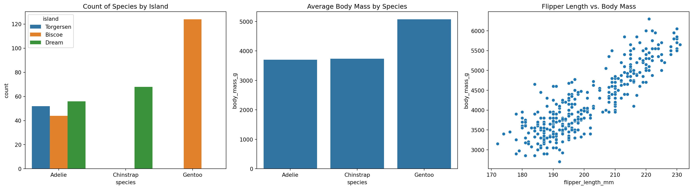
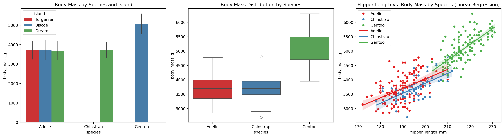
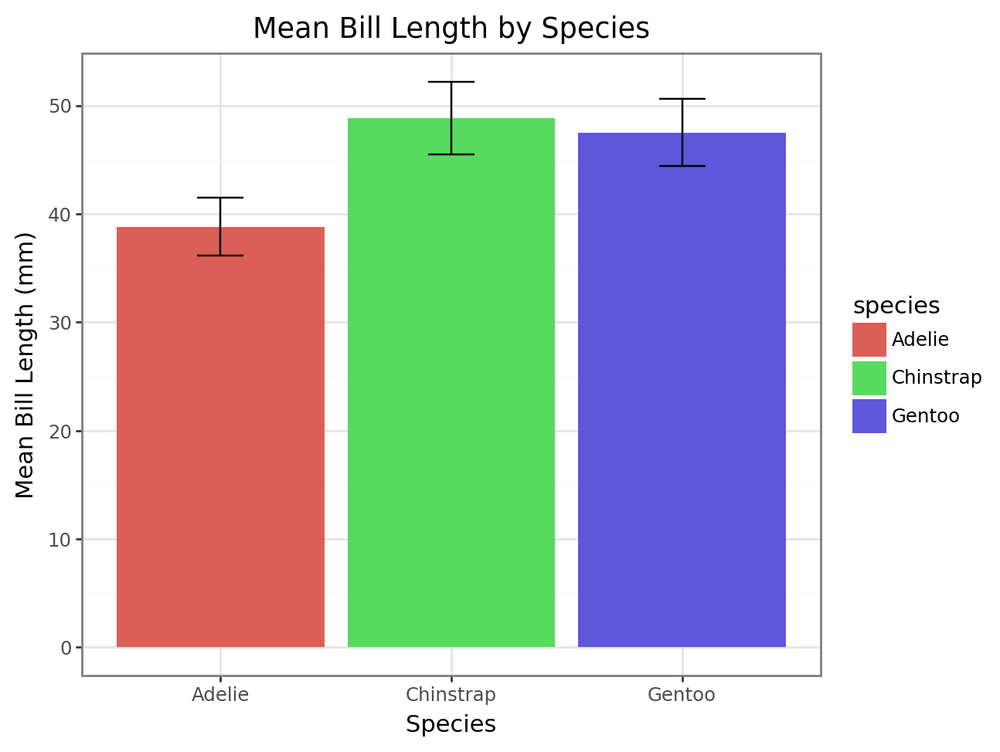

# run inside google colab
#!git clone https://github.com/cca-cce/osm-cda.gitresult visualizations
- example gallery matplotlib
- example gallery seaborn
- example gallery plotnine
- example gallery plotly
- example gallery altair
- download jupyter notebook
seaborn, descriptive
# Import necessary libraries
import pandas as pd
import seaborn as sns
import matplotlib.pyplot as pltIn this code chunk, we import the essential Python libraries needed for data manipulation and visualization:
pandasis used for handling data structures like DataFrames and provides functions for data manipulation.seabornis a statistical data visualization library built on top of matplotlib, offering a high-level interface for drawing attractive graphs.matplotlib.pyplotis a collection of functions that make matplotlib work like MATLAB, used here aspltfor plotting.
# Load the penguins dataset
penguins = sns.load_dataset('penguins')Here, we load the ‘penguins’ dataset using seaborn’s load_dataset() function and store it in a pandas DataFrame named penguins. This dataset contains measurements for different penguin species, including features like bill length, flipper length, body mass, and more.
# Set the output file path
output_file_path = '/home/sol-nhl/rnd/d/quarto/osm-cda/fig/'This line sets the directory path where the generated plots will be saved. The variable output_file_path holds the string representing the file path to ensure all saved figures are organized in the specified location.
# First plot: Graph two categorical variables
# Plot the count of penguins by species and island
plt.figure(figsize=(8, 6))
sns.countplot(x='species', hue='island', data=penguins)
plt.title('Count of Penguin Species by Island')
plt.xlabel('Species')
plt.ylabel('Count')
plt.legend(title='Island')
plt.tight_layout()
plt.savefig(f'{output_file_path}penguins_species_island.png')
plt.savefig(f'{output_file_path}penguins_species_island.pdf')
plt.close()In this code chunk, we create a bar plot to visualize the relationship between two categorical variables, species and island:
plt.figure(figsize=(8, 6))initializes a new figure with a specified size.sns.countplot()generates a count plot showing the number of penguins for each species, differentiated by island using thehueparameter.plt.title(),plt.xlabel(), andplt.ylabel()set the plot’s title and axis labels.plt.legend(title='Island')adds a legend with the title ‘Island’ to differentiate categories.plt.tight_layout()adjusts the layout to prevent clipping of labels.plt.savefig()saves the figure in both PNG and PDF formats to the specified output path.plt.close()closes the current figure to free up memory.
# Second plot: Graph one continuous variable by one categorical using simple barplot without error bars
# Plot the average body mass by species
plt.figure(figsize=(8, 6))
sns.barplot(x='species', y='body_mass_g', data=penguins, ci=None)
plt.title('Average Body Mass by Species')
plt.xlabel('Species')
plt.ylabel('Body Mass (g)')
plt.tight_layout()
plt.savefig(f'{output_file_path}penguins_body_mass_species.png')
plt.savefig(f'{output_file_path}penguins_body_mass_species.pdf')
plt.close()This chunk generates a bar plot to visualize a continuous variable (body_mass_g) against a categorical variable (species):
sns.barplot()creates a bar plot showing the average body mass for each species. Settingci=Noneremoves the error bars (confidence intervals) to display simple bars.- The
pltfunctions add a title and axis labels to the plot. - The plot is saved as both PNG and PDF files in the specified directory using
plt.savefig(). plt.close()closes the figure to free memory.
# Third plot: Graph two continuous variables
# Plot flipper length vs. body mass
plt.figure(figsize=(8, 6))
sns.scatterplot(x='flipper_length_mm', y='body_mass_g', data=penguins)
plt.title('Flipper Length vs. Body Mass')
plt.xlabel('Flipper Length (mm)')
plt.ylabel('Body Mass (g)')
plt.tight_layout()
plt.savefig(f'{output_file_path}penguins_flipper_length_body_mass.png')
plt.savefig(f'{output_file_path}penguins_flipper_length_body_mass.pdf')
plt.close()In the final code chunk, we create a scatter plot to examine the relationship between two continuous variables, flipper_length_mm and body_mass_g:
sns.scatterplot()plots data points representing each penguin’s flipper length versus body mass.- Titles and axis labels are added using
plt.title(),plt.xlabel(), andplt.ylabel(). - The plot is saved in both PNG and PDF formats using
plt.savefig(). plt.close()closes the figure to ensure that subsequent plots are not affected by the current figure.
seaborn, subplots
import seaborn as sns
import matplotlib.pyplot as plt
import pandas as pd
# Load the penguins dataset into a DataFrame
df = sns.load_dataset('penguins')
# Create a 1 row by 3 columns plot
fig, axes = plt.subplots(1, 3, figsize=(18, 5))
# Left subplot: Graph two categorical variables (species and island) using a countplot
sns.countplot(data=df, x='species', hue='island', ax=axes[0])
axes[0].set_title('Count of Species by Island')
# Middle subplot: Graph one continuous variable by one categorical using a barplot (without error bars)
sns.barplot(data=df, x='species', y='body_mass_g', errorbar=None, ax=axes[1])
axes[1].set_title('Average Body Mass by Species')
# Right subplot: Graph two continuous variables (flipper_length_mm vs. body_mass_g) using a scatterplot
sns.scatterplot(data=df, x='flipper_length_mm', y='body_mass_g', ax=axes[2])
axes[2].set_title('Flipper Length vs. Body Mass')
# Adjust layout
plt.tight_layout()
# Output directory
output_file_path = '/home/sol-nhl/rnd/d/quarto/osm-cda/fig/'
# Save the figure as PNG and PDF
fig.savefig(f"{output_file_path}seaborn_descriptive.png")
fig.savefig(f"{output_file_path}seaborn_descriptive.pdf")
# Display the plot
plt.show()
Here is the analysis of the Python code, broken down into separate chunks, with explanations for each step:
1. Import Libraries
import seaborn as sns
import matplotlib.pyplot as plt
import pandas as pdExplanation:
This step imports the necessary libraries. seaborn is used for data visualization, matplotlib.pyplot for creating plots, and pandas for data manipulation. These libraries provide powerful tools for analyzing and visualizing data in a variety of formats.
2. Load the Dataset
df = sns.load_dataset('penguins')Explanation:
This line loads the “penguins” dataset into a Pandas DataFrame (df) using Seaborn’s load_dataset function. The dataset contains information about penguin species, measurements, and other attributes. By loading it into a DataFrame, you make it easier to perform data analysis and visualizations.
3. Create the Plot Figure and Axes
fig, axes = plt.subplots(1, 3, figsize=(18, 5))Explanation:
This step creates a figure (fig) with three subplots (axes) arranged in a single row using plt.subplots(). The figsize=(18, 5) argument specifies the size of the entire plot in inches. This layout allows for multiple visualizations to be displayed side-by-side in one figure.
4. Create the Left Subplot
sns.countplot(data=df, x='species', hue='island', ax=axes[0])
axes[0].set_title('Count of Species by Island')Text(0.5, 1.0, 'Count of Species by Island')Explanation:
This block creates a count plot using Seaborn’s countplot() function, displaying the number of penguins by species with a hue for the island column. The plot is assigned to the first subplot (axes[0]). The set_title() method adds a title to this subplot, making it easier to interpret.
5. Create the Middle Subplot
sns.barplot(data=df, x='species', y='body_mass_g', errorbar=None, ax=axes[1])
axes[1].set_title('Average Body Mass by Species')Text(0.5, 1.0, 'Average Body Mass by Species')Explanation:
This block generates a bar plot that shows the average body mass (body_mass_g) for each penguin species using sns.barplot(). The errorbar=None argument ensures that no error bars are displayed. The plot is assigned to the second subplot (axes[1]), and a title is set for clarity.
6. Create the Right Subplot
sns.scatterplot(data=df, x='flipper_length_mm', y='body_mass_g', ax=axes[2])
axes[2].set_title('Flipper Length vs. Body Mass')Text(0.5, 1.0, 'Flipper Length vs. Body Mass')Explanation:
Here, a scatter plot is created using sns.scatterplot() to show the relationship between flipper_length_mm (x-axis) and body_mass_g (y-axis). This plot is added to the third subplot (axes[2]). The title provides context for what the plot represents.
7. Adjust the Layout
plt.tight_layout()<Figure size 672x480 with 0 Axes>Explanation:
This line adjusts the layout of the subplots to ensure they do not overlap. plt.tight_layout() automatically adjusts the spacing between subplots to make the figure look cleaner and more readable.
8. Define the Output Directory and Save the Figure
output_file_path = '/home/sol-nhl/rnd/d/quarto/osm-cda/fig/'
fig.savefig(f"{output_file_path}seaborn_descriptive.png")
fig.savefig(f"{output_file_path}seaborn_descriptive.pdf")Explanation:
The output_file_path variable defines the directory where the plots will be saved. The fig.savefig() method saves the entire figure in both PNG and PDF formats to the specified directory. This allows you to keep a copy of the visualizations for future reference or inclusion in reports.
9. Display the Plot
plt.show()Explanation:
This line displays the figure with all three subplots in an interactive window (or inline if using a Jupyter notebook). This command is necessary to visualize the plots when running the script in an environment that supports graphical output.
seaborn, inferential
import seaborn as sns
import matplotlib.pyplot as plt
import pandas as pd
# Read the penguins dataset into a pandas DataFrame
df = sns.load_dataset('penguins')
# Create a color palette for species
species_list = df['species'].dropna().unique()
palette = sns.color_palette('Set1', n_colors=len(species_list))
species_palette = dict(zip(species_list, palette))
# Create a 1 row by 3 columns plot
fig, axes = plt.subplots(1, 3, figsize=(18, 5))
# Left subplot: Barplot of two categorical variables with error bars (species by island)
sns.barplot(data=df, x='species', y='body_mass_g', hue='island', errorbar='sd', palette=palette, ax=axes[0])
axes[0].set_title('Body Mass by Species and Island')
# Middle subplot: Boxplot of one continuous variable by one categorical (body_mass_g by species)
sns.boxplot(data=df, x='species', y='body_mass_g', hue='species', palette=palette, ax=axes[1], legend=False)
axes[1].set_title('Body Mass Distribution by Species')
# Right subplot: Scatterplot with linear regression lines and confidence intervals differentiated by species
sns.scatterplot(data=df, x='flipper_length_mm', y='body_mass_g', hue='species', palette=species_palette, ax=axes[2])
# Add linear regression lines for each species
for species, color in species_palette.items():
sns.regplot(
data=df[df['species'] == species],
x='flipper_length_mm',
y='body_mass_g',
ax=axes[2],
scatter=False,
label=species,
ci=95,
line_kws={'color': color},
)
axes[2].legend()
axes[2].set_title('Flipper Length vs. Body Mass by Species (Linear Regression)')
# Adjust layout
plt.tight_layout()
# Save the figure as PNG and PDF
output_file_path = '/home/sol-nhl/rnd/d/quarto/osm-cda/fig/'
fig.savefig(f"{output_file_path}seaborn_inferential.png")
fig.savefig(f"{output_file_path}seaborn_inferential.pdf")
# Display the plot
plt.show()
Here is an analysis of the Python code, broken down into separate chunks, followed by explanations for each step:
1. Import Libraries
import seaborn as sns
import matplotlib.pyplot as plt
import pandas as pdExplanation:
This step imports the necessary libraries: seaborn for statistical data visualization, matplotlib.pyplot for plotting, and pandas for data manipulation. Importing these libraries allows access to their functions, which are used for loading datasets, creating plots, and saving figures.
2. Load the Penguins Dataset
df = sns.load_dataset('penguins')Explanation:
This line loads the “penguins” dataset into a Pandas DataFrame (df) using the Seaborn library’s load_dataset function. The dataset contains information on penguin species, measurements (e.g., body mass, flipper length), and habitat. Loading the data into a DataFrame enables easier manipulation and visualization of the dataset.
3. Create a Color Palette for Species
species_list = df['species'].dropna().unique()
palette = sns.color_palette('Set1', n_colors=len(species_list))
species_palette = dict(zip(species_list, palette))Explanation:
This chunk creates a color palette to differentiate penguin species in the plots: 1. species_list extracts unique species names from the species column, excluding any missing values. 2. palette generates a color palette using Seaborn’s Set1 palette with a number of colors equal to the number of species. 3. species_palette creates a dictionary mapping each species to a specific color, enabling consistent coloring across multiple plots.
4. Create a 1x3 Plot Grid
fig, axes = plt.subplots(1, 3, figsize=(18, 5))Explanation:
This line creates a figure with a grid of subplots arranged in one row and three columns using matplotlib. The figsize parameter sets the overall dimensions of the figure to 18 inches in width and 5 inches in height. The returned axes array will be used to plot the individual subplots.
5. Create the Bar Plot (Left Subplot)
sns.barplot(data=df, x='species', y='body_mass_g', hue='island', errorbar='sd', palette=palette, ax=axes[0])
axes[0].set_title('Body Mass by Species and Island')Text(0.5, 1.0, 'Body Mass by Species and Island')Explanation:
This block creates a bar plot in the leftmost subplot (axes[0]): - Uses sns.barplot() to plot body_mass_g (y-axis) for each species (x-axis), separated by island (hue). - The errorbar='sd' parameter adds standard deviation error bars to each bar. - palette specifies the color scheme, while ax=axes[0] assigns the plot to the first subplot. - The set_title() method sets the title of the subplot.
6. Create the Box Plot (Middle Subplot)
sns.boxplot(data=df, x='species', y='body_mass_g', hue='species', palette=palette, ax=axes[1], legend=False)
axes[1].set_title('Body Mass Distribution by Species')Text(0.5, 1.0, 'Body Mass Distribution by Species')Explanation:
This block creates a box plot in the middle subplot (axes[1]): - sns.boxplot() displays the distribution of body_mass_g for each species. - The hue='species' parameter assigns different colors to each species, using the same palette. - legend=False suppresses the legend for this plot to avoid redundancy. - The plot is assigned to the second subplot (ax=axes[1]), and set_title() adds a title to the plot.
7. Create the Scatter Plot with Regression Lines (Right Subplot)
sns.scatterplot(data=df, x='flipper_length_mm', y='body_mass_g', hue='species', palette=species_palette, ax=axes[2])<Axes: title={'center': 'Flipper Length vs. Body Mass by Species (Linear Regression)'}, xlabel='flipper_length_mm', ylabel='body_mass_g'>Explanation:
This line creates a scatter plot in the rightmost subplot (axes[2]): - sns.scatterplot() plots flipper_length_mm (x-axis) against body_mass_g (y-axis) for each species. - The hue='species' parameter color-codes the scatter points according to species using the previously defined species_palette. - ax=axes[2] places this plot in the third subplot.
8. Add Linear Regression Lines for Each Species
for species, color in species_palette.items():
sns.regplot(
data=df[df['species'] == species],
x='flipper_length_mm',
y='body_mass_g',
ax=axes[2],
scatter=False,
label=species,
ci=95,
line_kws={'color': color},
)Explanation:
This block adds linear regression lines to the scatter plot for each species: - Iterates through the species_palette dictionary to plot a separate regression line for each species. - sns.regplot() fits a linear regression line with confidence intervals (ci=95), using scatter=False to suppress additional scatter points. - line_kws={'color': color} sets the color of the line to match the scatter plot dots. - Each line is labeled with the species name for legend purposes.
9. Add Legend and Title for the Right Subplot
axes[2].legend()
axes[2].set_title('Flipper Length vs. Body Mass by Species (Linear Regression)')Text(0.5, 1.0, 'Flipper Length vs. Body Mass by Species (Linear Regression)')Explanation:
This block adds a legend to the rightmost subplot (axes[2]) to indicate which color corresponds to each species. It also sets the title of the subplot for better context.
10. Adjust Layout
plt.tight_layout()<Figure size 672x480 with 0 Axes>Explanation:
This line adjusts the spacing between subplots to prevent overlap and ensure a clean, organized layout. plt.tight_layout() automatically manages the subplot parameters for a visually appealing output.
11. Save the Figure
output_file_path = '/home/sol-nhl/rnd/d/quarto/osm-cda/fig/'
fig.savefig(f"{output_file_path}penguins_inferential_statistics_linear.png")
fig.savefig(f"{output_file_path}penguins_inferential_statistics_linear.pdf")Explanation:
This block saves the figure in both PNG and PDF formats to the specified directory (output_file_path). The fig.savefig() method captures the entire figure, including all subplots, and writes it to the desired file format.
12. Display the Plot
plt.show()Explanation:
This line displays the generated figure with all three subplots. It is especially useful when running the script in an interactive environment (e.g., Jupyter notebooks) to visualize the plot output.
plotnine, inferential
# Import necessary libraries
import polars as pl
from plotnine import *
import seaborn as snsIn this code chunk, we import the required Python libraries:
polarsaspl: Polars is a high-performance DataFrame library for data manipulation, similar to pandas but optimized for speed.plotnine: A grammar of graphics plotting library for Python, inspired by ggplot2 in R. We import all functions and classes fromplotninefor plotting.seabornassns: We use seaborn to load the built-in ‘penguins’ dataset into a pandas DataFrame.
# Load the penguins dataset into a polars DataFrame
penguins_pd = sns.load_dataset('penguins')
penguins = pl.from_pandas(penguins_pd)Here, we load the ‘penguins’ dataset using seaborn’s load_dataset() function, which returns a pandas DataFrame (penguins_pd). We then convert this pandas DataFrame into a polars DataFrame (penguins) using pl.from_pandas(). This allows us to leverage polars’ efficient data manipulation capabilities.
# Set the output file path
output_file_path = '/home/sol-nhl/rnd/d/quarto/osm-cda/fig/'This line sets the directory path where the generated plots will be saved. The variable output_file_path holds the string representing the file path to ensure all saved figures are organized in the specified location.
# Convert polars DataFrame back to pandas for plotting with plotnine
penguins_df = penguins.to_pandas()Since plotnine works with pandas DataFrames, we convert the polars DataFrame back to a pandas DataFrame using the to_pandas() method, storing it in penguins_df. This allows us to use plotnine for creating the plots.
# First plot: Graph two categorical variables as barplots with error bars
# Calculate counts and proportions
counts = penguins_df.groupby(['species', 'island']).size().reset_index(name='count')
total_counts = counts.groupby('species')['count'].transform('sum')
counts['proportion'] = counts['count'] / total_counts
counts['se'] = (counts['proportion'] * (1 - counts['proportion']) / total_counts) ** 0.5In this code chunk, we prepare the data for the first plot:
- We group the data by ‘species’ and ‘island’ and count the number of observations in each group using
groupby()andsize(). - We reset the index to turn the grouped data into a DataFrame with
reset_index(), naming the count column as ‘count’. - We calculate the total counts for each species using
groupby()andtransform('sum'). - We compute the proportion of each island within each species group.
- We calculate the standard error (
se) for the proportions using the formula for the standard error of a proportion.
# Create the bar plot with error bars
plot1 = (
ggplot(counts, aes(x='species', y='proportion', fill='island')) +
geom_bar(stat='identity', position='dodge') +
geom_errorbar(aes(ymin='proportion - se', ymax='proportion + se'),
position=position_dodge(0.9), width=0.25) +
labs(title='Proportion of Penguins by Species and Island',
x='Species', y='Proportion') +
theme_minimal()
)Here, we create the first plot using plotnine:
- We initialize a
ggplotobject withcountsDataFrame and specify the aesthetics (aes), mapping ‘species’ to the x-axis, ‘proportion’ to the y-axis, and ‘island’ to the fill color. geom_bar(stat='identity', position='dodge')creates a bar plot using the actual values of ‘proportion’ and positions the bars side by side for each species.geom_errorbar()adds error bars to the bars, representing the confidence intervals calculated earlier.labs()sets the title and axis labels of the plot.theme_minimal()applies a minimal theme to the plot for a clean look.
# Save the first plot
plot1.save(filename=f'{output_file_path}penguins_species_island_barplot.png', dpi=300)
plot1.save(filename=f'{output_file_path}penguins_species_island_barplot.pdf', dpi=300)This code saves the first plot in both PNG and PDF formats to the specified output directory, with a resolution of 300 dots per inch (dpi).
# Second plot: Graph one continuous variable by one categorical using boxplot
plot2 = (
ggplot(penguins_df, aes(x='species', y='body_mass_g')) +
geom_boxplot() +
labs(title='Body Mass by Species',
x='Species', y='Body Mass (g)') +
theme_minimal()
)In the second plot, we create a boxplot to visualize the distribution of the continuous variable ‘body_mass_g’ across different categories of ‘species’:
- We initialize the
ggplotobject withpenguins_dfand specify the aesthetics. geom_boxplot()creates a boxplot for each species, showing the median, quartiles, and potential outliers.labs()sets the plot title and axis labels.theme_minimal()applies a minimal theme for aesthetics.
# Save the second plot
plot2.save(filename=f'{output_file_path}penguins_body_mass_species_boxplot.png', dpi=300)
plot2.save(filename=f'{output_file_path}penguins_body_mass_species_boxplot.pdf', dpi=300)This code saves the second plot in both PNG and PDF formats to the specified directory, ensuring high-quality images for reports or presentations.
# Third plot: Graph two continuous variables with linear regression line and confidence intervals
plot3 = (
ggplot(penguins_df, aes(x='flipper_length_mm', y='body_mass_g')) +
geom_point() +
geom_smooth(method='lm') +
labs(title='Flipper Length vs. Body Mass with Regression Line',
x='Flipper Length (mm)', y='Body Mass (g)') +
theme_minimal()
)For the third plot, we create a scatter plot of two continuous variables with a linear regression line:
geom_point()plots individual data points of ‘flipper_length_mm’ vs. ‘body_mass_g’.geom_smooth(method='lm')adds a linear regression line with confidence intervals (shaded area), indicating the relationship between the two variables.labs()andtheme_minimal()are used to set titles and apply a clean theme.
# Save the third plot
plot3.save(filename=f'{output_file_path}penguins_flipper_length_body_mass_regression.png', dpi=300)
plot3.save(filename=f'{output_file_path}penguins_flipper_length_body_mass_regression.pdf', dpi=300)Finally, we save the third plot in both PNG and PDF formats to the output directory, completing the data visualization tasks.
In each code chunk, we’ve carefully explained the purpose and functionality of the Python commands used, ensuring clarity and understanding of the data manipulation and plotting processes.
plotnine, testing
# prompt: acquire dataset penguins from seaborn package, read it into a polars dataframe, generate a data analysis pipeline where bill_length is aggregated by species, pipe the aggregated data out to a plotnine bar chart with error bars
#!pip install polars plotnine
import seaborn as sns
import polars as pl
from plotnine import *
# Load the penguins dataset
penguins = sns.load_dataset('penguins')
# Convert to a Polars DataFrame
df = pl.from_pandas(penguins)
# Define the data analysis pipeline
(
df
.group_by('species')
.agg([
pl.col('bill_length_mm').mean().alias('mean_bill_length'),
pl.col('bill_length_mm').std().alias('std_bill_length')
])
.pipe(lambda df: (
ggplot(df, aes(x='species', y='mean_bill_length', fill='species'))
+ geom_bar(stat='identity', position='dodge')
+ geom_errorbar(aes(ymin='mean_bill_length - std_bill_length', ymax='mean_bill_length + std_bill_length'), width=0.2)
+ theme_bw()
+ labs(x='Species', y='Mean Bill Length (mm)', title='Mean Bill Length by Species')
))
.draw()
)